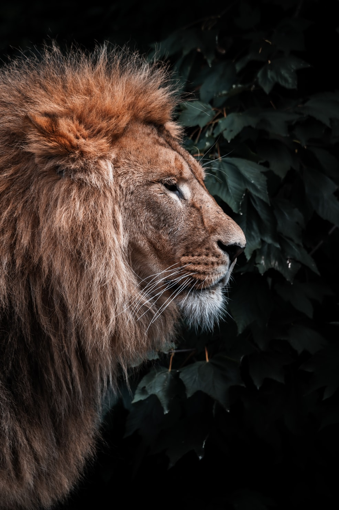

Los leones son los únicos felinos que viven en manada. Las unidades familiares
pueden incluir hasta tres machos, una docena de hembras y sus crías. Todas las
leonas de una manada están emparentadas y usualmente los pequeñas hembras en
su seno se quedan con el grupo a medida que envejecen. Los varones jóvenes
sin embargo tarde o temprano abandonan el grupo o son expulsados y establecen
su propia manada.

Una abundante y frondosa melena rodea su cara y se extiende por el cuello del rey
de la selva solo los machos la poseen: este es su rasgo más característico y único
en la familia de los félidos. Habitan en las sabanas africanas y en una zona
reducida del noreste de la India, pero son una especie muy vulnerable pues
antiguamente habitaban en otras partes del mundo de las que han ido desapareciendo.
Las leonas son las encargadas de salir a cazar mientras que los machos deben defender
el territorio de la manada y a sus hembras. Suelen comer grandes mamíferos como ñus,
cebras, búfalos o facóceros entre otros, y pueden llegar a vivir aproximadamente unos
15 años.
Estos animales han sido venerados a lo largo de la historia por su valor y su fuerza.
Una vez pudieron encontrarse en la mayor parte de África y algunas partes de Asia y
Europa. Hoy en día sólo se encuentran en ciertos lugares al sur del desierto del Sáhara,
a excepción de una población muy pequeña de leones asiáticos que sobrevive en el bosque
Gir de la India. Aquí tienes una galería fotográfica con decenas de imágenes de leones.